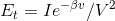

能见度传感器 用户指南¶
仪器技术特点¶
仪器概述¶
能见度传感器 提供与气象能见度相关的测量，传感器是基于气溶胶前散射原理而设计的，是继透射式能见度仪发展起来的新一代气象能见度监测设备。传感器可广泛用于气象台站、远程自动气象站以及机场、高速公路、航道、大型舰船等交通运输部门。
能见度传感器 由光发射器、光接收器及微处理控制器等主要部件组成。发射器发射红外脉冲光，接收器同时检测大气中气溶胶粒子前向散射的脉冲光强度，所有测量信息由微处理控制器搜集并通过专门的数学模型算法转化为气象光学视程Meteorological Optical Range（MOR）。 能见度传感器 支持 9~ 24Vdc电源，提供RS-485通讯线缆。仪器将气象能见度数值和状态信息通过通讯接口发送到监控中心的上位机。
能见度传感器 提供多组内置命令用于配置系统参数和控制系统多种功能。在组装和维护过程中，需要一个显示终端来检查系统参数，并可能用来更改参数值。
结构组成¶
典型技术指标¶
机械指标¶
尺寸（长x宽x高）：610mm x 230mm x 300mm
重量： 小于10kg
安装： 安装在已架设好的圆形立柱上
材料： 阳极化处理硬质铝，外表面加喷漆保护
电力指标¶
电源： 直流9 ~ 24VDC
功率： 非除雾状态 2W， 除雾状态 小于5W，典型值4W
光学指标¶
散射角覆盖：39°—51° 前散射
峰值波长： 940nm
带 宽： 100nm
测量指标¶
测量范围： 10m—30km， 10m-50km， 可定制10m-80km
测量精度： ≤2km ，误差±2%
2Km—10km，误差±5%
仪器一致性：≤±4%
最小更新间隔： 15秒
线性动态量程： 3000：1
可靠性与维护周期¶
平均无故障工作时间（MTBF）：大于18000小时
清洁光学镜头：3个月，或视使用环境而定
可靠性与维护周期¶
工作环境温度： －40—+60℃
工作相对湿度： 0—100%
地域适应性：可在沿海地区连续使用
主要功能¶
- 可对大气能见度进行连续测量输出
- 能见度传感器 具有自检能力，可对自身的12V供电电压，接收器、发射器温度，接收器信号及零点信号等进行实时检测，并给出状态报警指示。
- 提供RS485通信接口，支持Modbus RTU通信协议
- 仪器可设置ID号以标识身份，ID=00为通用标识，ID号出厂时均为通用标识，用户可通过命令进行设置新的ID号，ID号一旦设定不受设备断电影响，此功能在多机联网共用主站时用以区分布点仪器
- 仪器具有多种命令进行远程监控维护
主要特点¶
结构特点：能见度仪采用一体化结构设计，紧凑小巧，传感器尺寸和重量非常小，包装、储运、安装方便，也可以做为便携式仪器使用；独特的双散射接收器结构设计，对太阳和其它杂光干扰降到了最低
发射器和接收器窗口透镜经过了特殊的防灰尘、防霉菌镀膜处理，使镜头在自然环境中积累灰尘的厚度与速度大大降低，同时也降低了盐雾与油污的污染几率
仪器结构材料为高质量硬质铝材，表面进行了阳极钝化处理，并进行多道喷漆保护；所有螺钉均选择耐腐蚀不锈钢螺钉；壳体内部是密封的，达到了IP65防护等级，具有沿海气候适应性
仪器功耗极低，在冬天发射器频繁加热状态，也只小于5W，因此可适应蓄电池或太阳能板供电的电源工作方式。直流12VDC供电，方便系统集成。
仪器采集器设计上强调长期运行的稳定性，内置看门狗电路，经过长期运行考验，仪器工作稳定、可靠
实时数据显示：传感器可以输出一系列的数字信息，操作人员可以自由选择15秒或60秒间隔时间，信息可以通过自动应答或被动招测方式输出。
上位计算机可以灵活地显示以下内容：
- 每个信息可以带有时间日期标记；
- 信息内容能以固定的几种模式输出，每种模式均有状态报警数值提示；
仪器的直流供电电路具有防反接和自恢复保险双重设计，即使用户误操作，也不会引起仪器线路板烧毁，无需更换保险丝，重新正确操作后即可恢复正常
仪器的通讯接口芯片具有15KV的防静电保护，在用户接线操作时可最大限度保护电路免受人体静电的危害
仪器具有防雷措施，其通信接口和电源接口均具有防雷设计，可将雷击损害降到最低
能见度传感器 测量原理¶
前向散射原理¶
能见度传感器 具有前散射仪器的所有性能特点，它通过对采样区悬浮颗粒发出小于90 度的前向散射光的测量而实现；能见度仪的采样区由发送器发射光路与接收器的接收光路交叉部分决定。显然，它不同于透视仪测量的总消光系数，前向散射仪只测量一定角度的散射系数，也即在中央前散射角附近的较窄的散射角。普遍认为计算白天和夜间的能见度需要测量总消光系数，而不是一定角度的散射系数，因此有必要表明一定角度的散射系数在特定的条件下与总大气消光系数有确定比例关系，总大气消光系数包括全范围内散射和吸收光线之和。在能见度测量小于100km 以内时，雾，烟、灰霾、扬尘或扬沙等悬浮物及各种类型的降水量决定了可见和近可见光线在大气中的消光作用，超过100km距离，分子物质的散射才发挥作用；而悬浮颗粒和降水的吸收作用与其散射作用相比可以忽略不计。鉴于以上理由，在能见度小于100km时，总散射系数可以等于总消光系数。这一结论，在各种权威试验中得到认证。 理论上，利用有角度的散射系数的测量与总散射系数测量的结果是一致的。有角度的散射系数可分为2 个部分：相位角函数和总散射系数。用有角度的散射系数代替总散射系数，只有当相位角函数为常数时才可实现，并且测量应保证在所有天气条件下都有效。研究表明：在散射角35 到55 度区域，对任何级别的薄雾和雾，相位角的变化非常小，因此，使用有角度的散射系数代替总的散射系数是可行的，这也是前向散射能见度仪实现的依据。 能见度传感器 全部采用45度散射角，因为该角度不仅保证了在雾、烟幕、灰霾、扬尘测量的准确性，也保证了在降雪测量中有效性
能见度的定义¶
能见度¶
目标物的能见距离，是指正常视力的观测者观测目标物时，能从背景上分辨出视角大于0.5度的目标物轮廓的最大距离。
白天视程¶
几乎所有仪器测量能见度的方法均采用测量大气消光系数ß。大气消光系数通过Koschmieder 定律(白天)、Allard 定律(夜间)及K氏和A氏的变形公式转换成视程。
计算白天视程的原始公式是Koschmieder 在1924 年得出的：
VR = 3.912 / ß –ß 为大气消光系数随后的研究认为K氏用0.02 做为人眼的阈值太小了，因此，0.05 被认为比较实际，K氏公式被改为
VR = 3.00 / ß这个简单的公式考虑了大气消光因素和其它附加的光线，也即黑体在天空中被观测的情况。因此，严格的白天视程定义意味着黑体目标在天空中被辨识的距离。
夜间视程¶
正常视力的观测者在夜间能看到一定发光强度目标灯灯光的最远距离。Allard 在1876 年得出了光强度I 与距离的公式
Et 是观测者照度阈值，ß 是大气消光系数
除了大气的消光作用，公式也说明点光源的亮度衰减与光源距离平方成反比。此公式测量夜间视程明显不同于Koschmieder 公式，Koschmieder 公式是简单的代数关系，而Allard 公式用超越函数表示两者，因此，这种方法只能通过繁琐计算或者查表方式应用。
气象光学视程 (MOR)¶
色温2700K的白炽灯发出的平行光辐射通量，经大气衰减到起始值的5%后在大气中所需经过的距离。用于实用目的，MOR 与白天的视程具有同一方法：
MOR＝3.00 / ßMOR 应用满足了气象观测人员的需要，因为它可以对大气透射进行一对一的校正，并且白天和夜间相同气象条件下能见度是一样的，它被广泛的应用，FRT VRE系列能见度仪在没有特别说明情况下，测量的能见度均为气象光学视程。
工作原理¶
仪器工作时，发射器发出一束中心波长为0.94μm的稳定的光脉冲，红外光脉冲射入一定体积大气之后，其前向主角度为45度的散射光被接收器中的硅光电二极管所探测，并将其转换为脉冲电信号，此信号经过高精度、稳定的放大电路，并同步的被接收器中的A/D转换器转换为数字量信号后送入微处理控制器，由微处理控制器取样和计算后得到当前能见度值。实时的能见度值通过RS-485串行信道传送给用户上位计算机。
安装¶
组织安装¶
在您开始安装能见度仪之前，先制定一个安装步骤计划。以下是如何组织安装过程的计划举例
安装立柱
将能见度安装在立柱上
设备连线
- 将现场的电源和通讯电缆连接到接线端子上
- 将通讯线连接到上位计算机上
对系统进行启动测试
注解
能见度传感器 安装立柱直径范围： 35mm ~ 100mm。对于直径小于50mm的立柱，可以使用紧固螺丝进行锁紧。
定位和定向¶
对能见度仪位置的主要要求为：
所在位置的测量值应能代表周围的天气状况。
这个地点应该没有影响光学测量的障碍物和反射表面，也没有明显的污染源。
- 建议在发射机和接收机的视线内没有障碍物。如果发射机光束从障碍物上反射到接收机上，传感器将会指示很低的能见度值，因为它无法分辨反射信号和真正的散射信号。
- 安装位置避免太阳光直射进入接收器。在强光下接收机线路可能会饱和，内置诊断程序将会显示警告。强日光还会提高接收机内的噪音水平。
注解
- 建议安装位置距离地面3m以上，这样可以有效减小地面强烈反射引起的饱和。
- 建议安装位置半径3m内无障碍物
- 建议接收管筒 北向安装，以减小阳光干扰
卸货与启封¶
启封¶
- 阅读装箱单。比较装箱单和订货单，确保发货完整
- 打开盖子
- 如果发现缺货或损坏，和供应商联系
- 将包装材料和盖子放回箱中，保存以备后用
存放条件¶
存放 能见度传感器 时，应该带包装放置在干燥条件下，不要放在敞开的空气中。存放条件为：
- 温度：－40℃—70℃
- 相对湿度：低于95％
安装步骤¶
能见度传感器 需要用户提供已有的安装立柱，立柱直径 35mm ~ 100mm。推荐直径80mm，这样可以防止立柱过细导致设备抖动。
安装螺丝采用 M8螺丝，默认提供 M8*50螺丝，更粗的立柱需要用户自己准备螺丝。紧固螺丝采用M4，默认随机提供，用于安装小于50mm直径立柱。
连接线缆¶
能见度传感器 使用GTX-16 航插提供对外接口。默认线缆随机附带，安装时只需要用户将线缆取出，对准卡扣，螺紧于 能见度传感器。
安装能见度仪¶
将能见度仪托起，控制盒后端的V形卡箍靠近立柱，用另一个V形卡箍和2个螺钉将能见度仪整体装在立柱或横臂上。安装好的能见度仪呈水平状，发射器、接收器的开口斜面均朝下
通讯设置¶
在进行完线缆连接后，可以在能见度仪软件中配置通信细节。
按缺省设置，传感器每60秒通过串口传送一条新的ASCII码数据信息。用户可以改变数据间隔和模式。传感器可以在被动招测状态中使用，比如数据信息只有在主机用招测命令查询时才发送。另外，串口的波特速率可以更改，更改范围为：300、600、1200、2400、4800、9600，8位数据位, 无校验, 1位停止位。
缺省通信设置为：
设备参数 缺省参数 串行参数 9600 8N1 工作模式 模式1. 60秒自动上传ASCII 地址ID 0
注解
在几个传感器共享同一通信线路的多点通信中，能见度仪应在被查询状态下使用，每个传感器必须有不同的识别号（ID）。
启动测试¶
仪器加电启动后能见度仪送出设备信息：:
ADDR:0 MODE:1 UART:9600,N,8,1<cr><lf>等候15秒钟，然后用命令
OPEN 00<cr><lf>进入命令状态，此时仪器应回传：
Command Mode Open<cr><lf>表明双向通讯信道正常，如无回传，则检查通讯线缆连接是否正确。
键入
CLSE 00<cr><lf>退出命令状态，此时仪器回传：:
Command Mode Close<cr><lf>之后进入自动信息状态，确认在显示器上每60秒出现一条信息，注意信息末尾的两个数字为故障或警告状态指示位，看仪器工作是否正常。
操作指导¶
请参考 能见度传感器 通信与调试
配套清单¶
清单如下
序号 名称 数量 备注 1 传感器 1 2 供电通信线缆 1 3 装箱单 1 4 合格证 1 5 使用指南 1 纸质或电子版